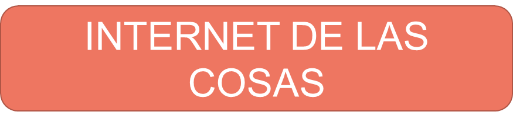

El internet de las cosas, o en inglés Internet of Things, hace referencia a la capacidad de ciertos dispositivos para ser interconectados entre sí a través de una red.
Se pueden conectar muchos tipos de dispositivos como bombillas, dispositivos médicos , frigorífico, etc.
El uso del internet de las cosas implica la recopilación de un gran volumen de datos, denominados Big Data. Que pueden ser analizados mediante IA.
Esto nos ha llevado a un mundo hiperconectado en el que los sistemas digitales pueden grabar, supervisar y ajustar cada interacción con las cosas conectadas.